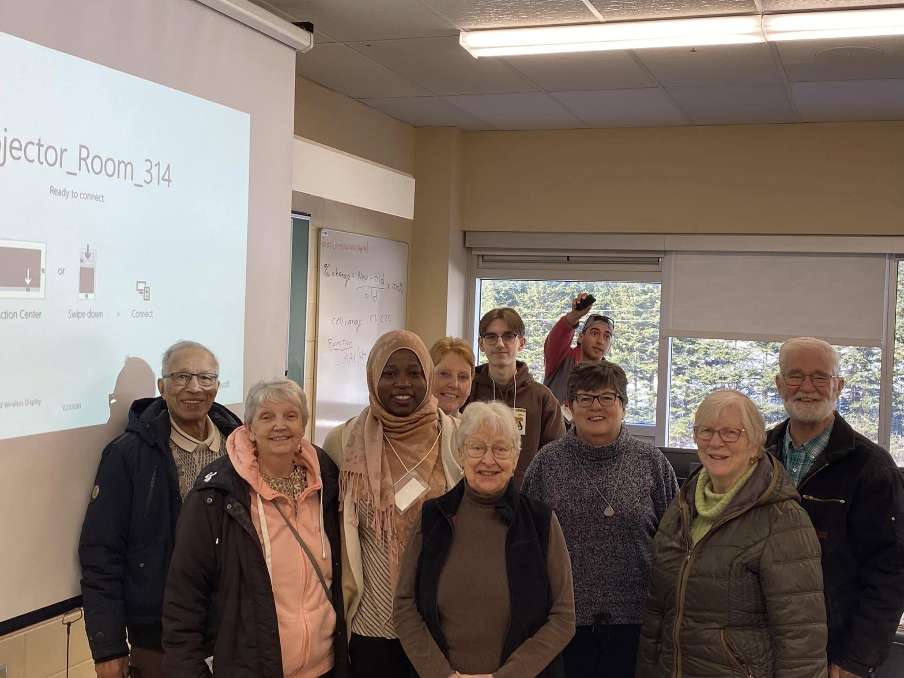
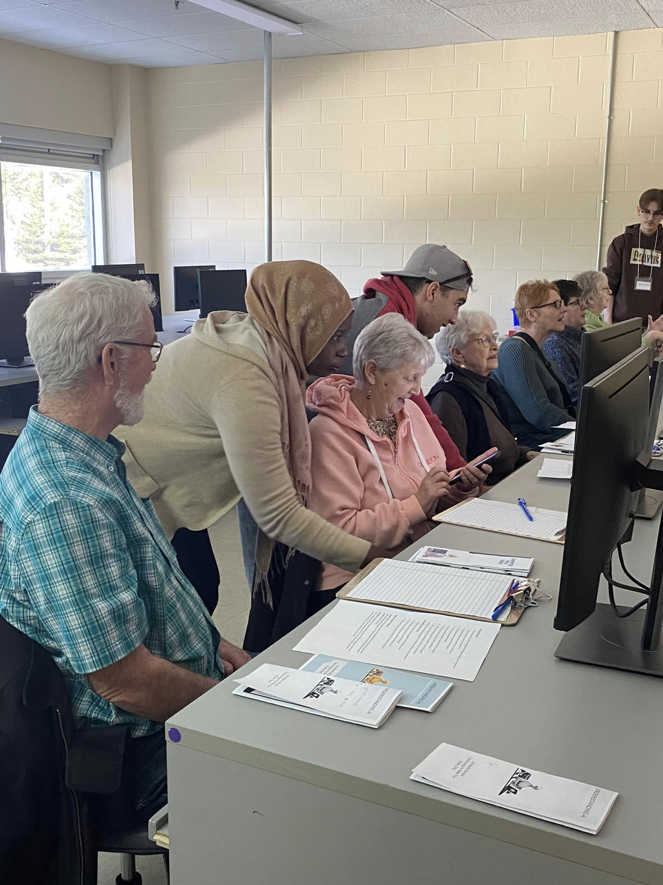
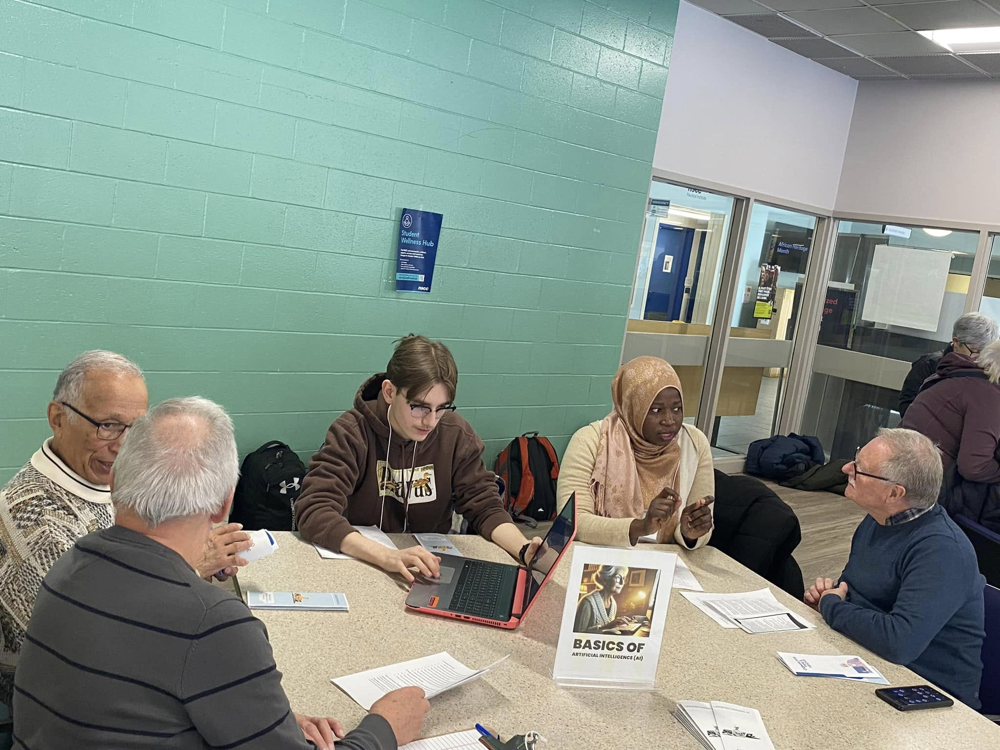

Project Overview
This assignment was a part of our Professional Practice for IT (ICOM2703) course. We were assigned groups and tasked to create a workshop where we presented an IT topic to the Corah group, which is a group of seniors that do activities every week on campus. Our group chose to cover AI, discussing both its advantages and potential harmful uses, and discussing how they could use it.
Project Photos


